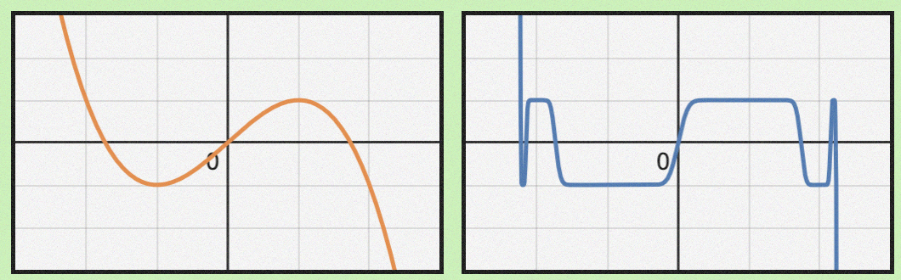

Muon优化器笔记
2026-03-18
〔note〕
#note
#optimizer
#muon
#ai
使用场景
稠密的线性层。因此排除了embedding层和分类层。
计算
总体上和momentum类似。但是，在更新前对更新量做一下NewtonSchulz5操作。其中参数G是更新量。
 muon算法流程
muon算法流程
def newtonschulz5(G, steps=5, eps=1e-7):
assert G.ndim == 2
a, b, c = (3.4445, -4.7750, 2.0315)
X = G.bfloat16()
X /= (X.norm() + eps)
if G.size(0) > G.size(1):
X = X.T
for _ in range(steps):
A = X @ X.T
B = b * A + c * A @ A
X = a * X + B @ X
if G.size(0) > G.size(1):
X = X.T
return X
苏剑林的博客里面写的是（W是参数矩阵，对应上面的θ）：
Wt=Wt−1−ηt[msign(Mt)+λWt−1]
则是加了梯度衰减的版本，类似Adam变成AdamW。
Deriving Muon当中写的是：
W←W−η×fan-infan-out×NewtonSchulz(∇WL).
fan-out和fan-in分别是输出和输入的维度（参数矩阵W的维度）。
推导
本节内容主要直接从Deriving Muon里面抄
“稠密”和RMSNorm
线性层主要处理“稠密”的向量，这里的所谓“稠密”指的是大部分位置的值都接近1或者-1。可以用RMSNorm来量化“稠密性”：
∥v∥RMS:=d∥v∥
之所以除以d，是为了兼容不同维数的向量，不管什么维度，“稠密”的向量RMSNorm会在1附近。如果都用L2范数，高维度对应的norm会更大。在Transformer里面，我们几乎每一层Linear后面都要加上LayerNorm，可以理解为为了鼓励稠密性，抑制稀疏性。
那么权重矩阵会怎么影响RMSNorm呢？考虑
y=Wx，那么
∥y∥2=yTy=xTWTWx
定义RMS到RMS映射的范数如下，意义是矩阵最大能把一个向量缩放到什么程度。
∥W∥RMS→RMS:=x=0max∥x∥RMS∥y∥RMS=dydx⋅x=0max∥x∥∥Wx∥
所以其实就是WTW的最大特征值，即W最大奇异值的平方，即W的谱半径ρ(W)。∥y∥永远不会比ρ(W)∥x∥大。dx和dy分别是x和y的维度，其实就是原公式的fan-in和fan-out。
于是，考虑用ΔW更新参数后，线性层输出的变化：
Δy=(W+ΔW)x−Wx=ΔWx
会有
∥Δy∥RMS≤∥ΔW∥RMS→RMS⋅∥x∥RMS
参数更新的效率
我们希望参数更新之后，loss下降最多。考虑每个参数Wij，我们希望最小化更新后的loss，即L(W+ΔW)。同时希望输出维持稠密性，即稠密性的变化要控制在阈值η以内。为了方便，我们把L(W+ΔW)泰勒展开到一阶，忽略高阶项
s.t. ΔWijminL(W)+∂Wij∂L(W)ΔW∥Δy∥RMS≤η
把所有Wij写到一块之后就是，并且注意到L(W)在这里相对于ΔW是个常数，问题变为最小化这两个矩阵的Frobenius内积
ΔWmin⟨∇WL,ΔW⟩
∥x∥RMS也和ΔW无关，问题变成
s.t. ΔWmin⟨∇WL,ΔW⟩∥ΔW∥RMS→RMS≤η′
然后这一步我暂时不理解怎么证明。但是可以直观感受到，把∇WL每个特征向量方向都取−η′即可，让他在可控范围内尽量负。或者说，每个特征向量的方向都均等地更新，不因梯度的贡献量而偏袒某个方向。由于梯度不一定是方阵，所以用SVD而不是特征值分解。
ΔW=−η′dydx⋅UVT
绕开SVD
在矩阵很大的时候，SVD是个代价比较高的操作。因此需要找到高效的方式计算
∇WL=UΣVT↦UVT
这个映射就是上面苏剑林博客里的msign(⋅)函数，可以看作符号函数的推广。
此处的所谓Newton-Schulz方法，核心在于利用奇次矩阵多项式的性质
p(X)=Up(Σ)VT
相当于直接作用于奇异值。
于是乎作者找到一个多项式
p3(Σ):=23⋅Σ−21⋅ΣΣ⊤Σ.
一维情况打出来如下图左。反复应用这个多项式如图右，会发现在±1附近，趋近于符号函数了。

多项式
一般只迭代5次，上面的newton_schulz5里面的那三个系数，大概是5次迭代的较优解。
超参设置
根据苏剑林的说法，如果用Adam迁移到Muon，需要将学习率放大0.2d倍，一般大约是10倍。所以他们做的moonlight版Muon还在根号前面多乘了0.2，而且为了方便把根号下的内容改成了fan-in和fan-out中的较大值。
ref